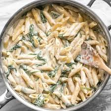

Pasta Alfredo

steg för steg
Koka pastan enligt anvisning på förpackningen. Skala och hacka löken. Fräs löken i smöret någon minut och häll i grädden. Låt koka upp och dra av från värmen. Riv osten fint och rör i den. Smaka av med peppar. Servera såsen med pastan.
Ingredienser
4 port pasta (gärna fettuccini) 1 schalottenlök 1 msk smör 3 dl vispgrädde 3 dl parmesan peppar
Tid & Portioner
tid
portioner